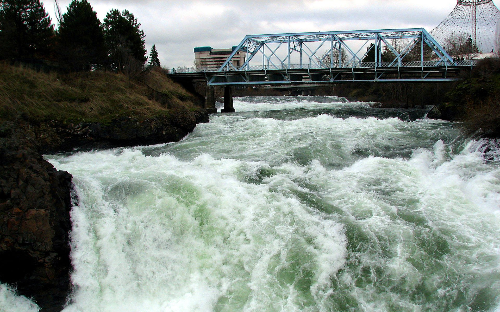
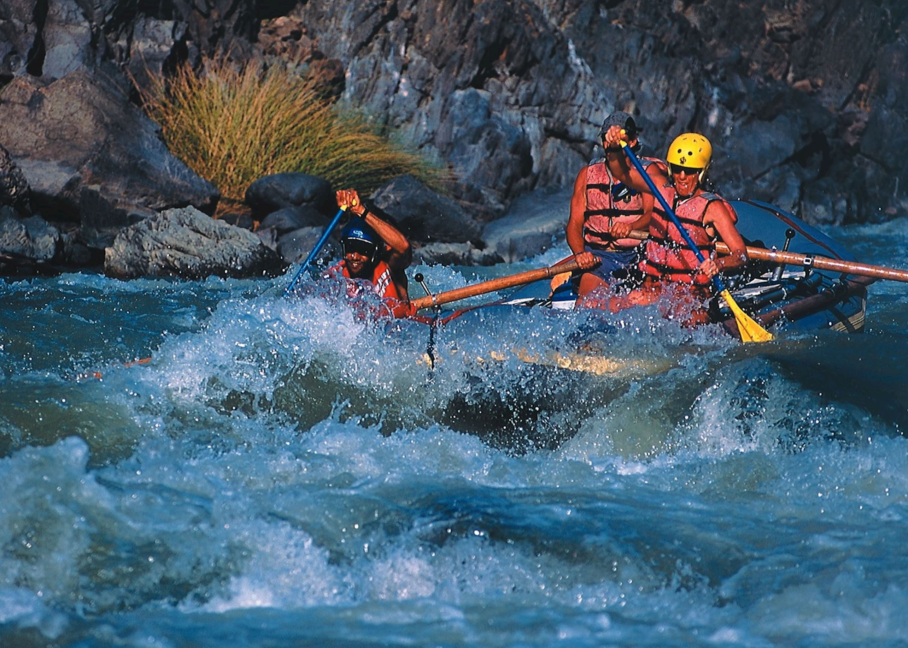
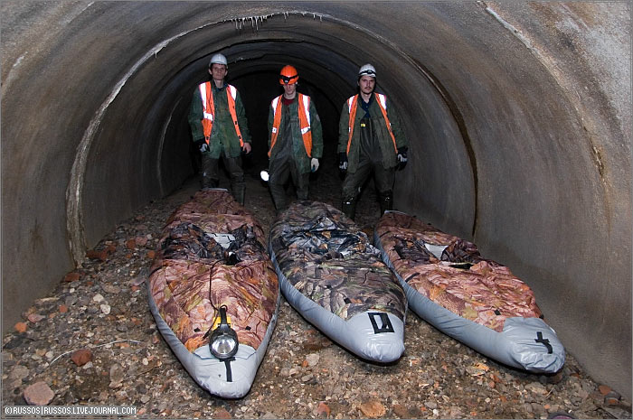
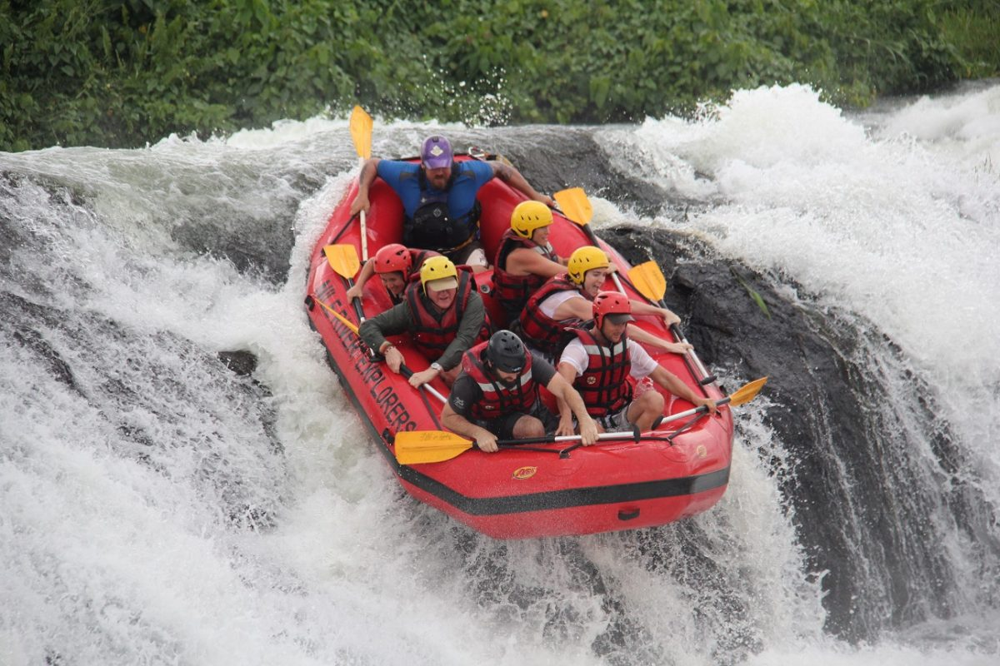
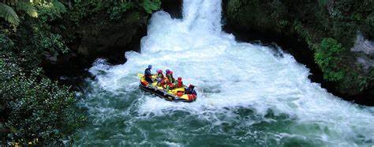

Trip 1: Wild Rapids Expedition
Embark on an adrenaline-pumping adventure through the wildest rapids of Koom Valley. This trip is for experienced rafters who seek the ultimate thrill.
- Duration: 3 days
- Difficulty Level: Advanced
- Group Size: 4-8 people
- Vehicle: Rafts
- River: Koom River
- Rapid Size: Class IV-V
- Price: $500 per person

Trip 2: Scenic Canoeing Experience
Explore the breathtaking beauty of Koom Valley's scenic waterways on a peaceful canoeing journey. Perfect for nature enthusiasts and beginners.
- Duration: 1 day
- Difficulty Level: Easy
- Group Size: 2-4 people
- Vehicle: Canoes
- River: Koom River
- Rapid Size: Class I-II
- Price: $150 per person

Trip 3: Half-Day Adventure
Experience the thrill of conquering rushing waters in a half-day rafting adventure. Suitable for both beginners and experienced rafters.
- Duration: Half day
- Difficulty Level: Moderate
- Group Size: 6-10 people
- Vehicle: Rafts
- River: Koom River
- Rapid Size: Class III-IV
- Price: $250 per person

Trip 4: Extreme Kayaking Adventure
Embark on a heart-pounding kayaking adventure down the challenging rapids of Koom River. This trip is designed for experienced kayakers seeking an adrenaline rush.
- Duration: 2 days
- Difficulty Level: Expert
- Group Size: 2-4 people
- Vehicle: Kayaks
- River: Koom River
- Rapid Size: Class V
- Price: $600 per person

Trip 5: Family Rafting Adventure
Enjoy a fun-filled rafting adventure suitable for the whole family. Experience the excitement of rafting through the scenic sections of Koom River.
- Duration: 1 day
- Difficulty Level: Easy-Moderate
- Group Size: 4-6 people
- Vehicle: Rafts
- River: Koom River
- Rapid Size: Class I-III
- Price: $200 per person
Trip Details
- Vehicle: Rafts, Canoes, Kayaks
- River: Koom River
- Rapid Size: Class I-V
- Group Size: Varies depending on the trip
- Price per Person: Varies depending on the trip
Experience the thrill of white water rafting with our expert guides and state-of-the-art equipment. Here are some additional details about our trips:
Rafts:
- Our rafts are designed to handle the powerful rapids of Koom River, providing stability and safety.
- Each raft can accommodate up to 8 passengers, including the guide.
- They are equipped with safety gear, including helmets, life jackets, and paddles.
Canoe and Kayak:
- For those seeking a more intimate experience, we offer canoe and kayak trips.
- These smaller vessels allow for greater maneuverability and a closer connection with the water.
- Canoe trips can accommodate up to 2 passengers, while kayaks are designed for individual use.
Rivers and Rapids:
- Koom River is renowned for its thrilling rapids, ranging from Class I to Class V.
- Our trips cover different sections of the river, offering a variety of rapids to suit different skill levels.
- Our experienced guides will ensure your safety and provide guidance on navigating the rapids.
Group Size:
- The group size for each trip may vary depending on the trip duration and availability.
- Smaller trips may have a minimum group size of 4 participants, while larger trips can accommodate up to 10 participants.
- Private trips can also be arranged for customized experiences.
Pricing:
- Our trip prices vary depending on the duration, difficulty level, and the chosen vessel.
- Prices start at $150 per person for half-day adventures and range up to $500 per person for multi-day expeditions.
- Special group rates and discounts may be available for larger groups or frequent customers.